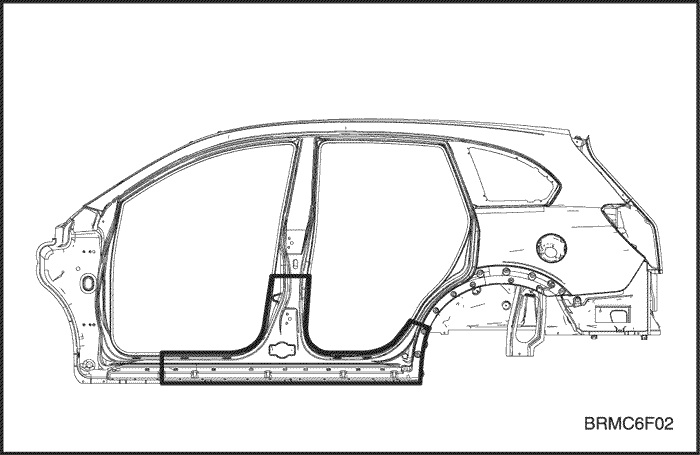
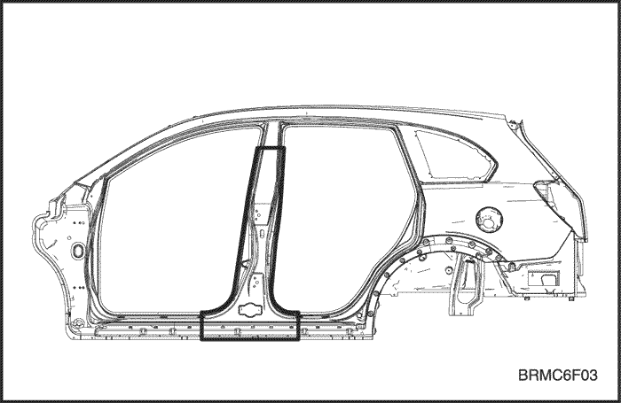
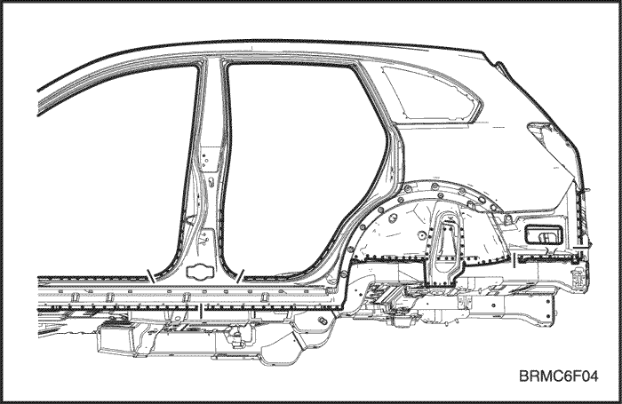
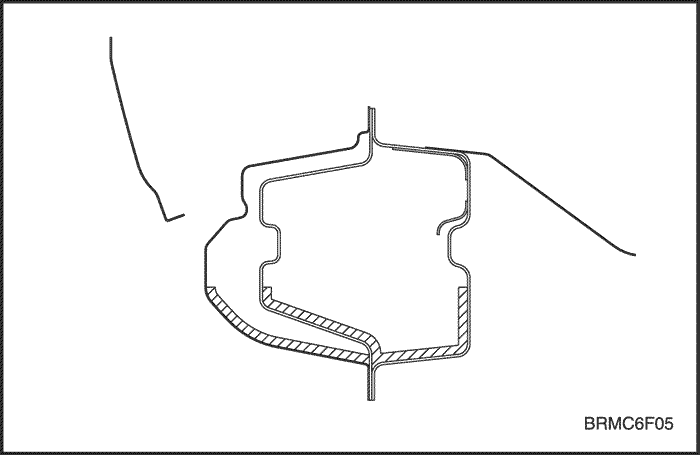

- Desmonte los componentes asociados.
- Puertas.
- Burletes, guarnecido del montante y componentes asociados.
- Alfombra.
- Conjunto de los cinturones de seguridad.
- Interruptor y cableado de las puertas.
- Tubería de combustible y tubería de líquido de freno.
- Otros componentes asociados.
Nota: Desmóntelos de acuerdo con el componente que haya resultado dañado.
- Desabolle y enderece la zona dañada hasta llevarla aproximadamente a su forma original.
- La abolladura puede extenderse hasta el bastidor interior del techo, el vano de puertas en el bastidor interior y el piso. Compruebe en primer lugar la magnitud de la abolladura para que pueda repararse el bastidor adecuadamente.
Nota: Utilice el forro de protección termo-resistente para proteger las zonas pintadas, los asientos, moquetas y otros componentes.
- Desabolle y enderece las zonas dañadas.
- No desabolle más de lo necesario.
- Corte y extraiga el vano de puertas del bastidor.
- Compruebe el daño que haya sufrido el vano de puertas del bastidor y corte el nuevo vano de puertas de forma que tenga un solape de 30 mm (1,18 pulg.) sobre el montante, tanto en la parte delantera como en la trasera.
- Corte la zona dañada con una sierra de mano a lo largo de la línea resaltada en negrita como se muestra en la figura.
Nota: Tenga cuidado de no cortar el panel interior. Esto podría originar una reparación de mayor alcance.


- Si la deformación implica parte del montante central, córtelo como se muestra en la figura.

- Granetee la zona alrededor de las marcas de la soldadura por puntos en las pestañas soldadas.
- Utilice una fresa especial cortapuntos para taladrar los puntos de soldadura.
Nota: Cuando esté taladrando, tenga cuidado de no perforar el panel interior.
- Desprenda el panel del vano de puertas del bastidor con un cincel neumático, dejando intactas las pestañas para soldar.
Precaución: Utilice gafas de protección abiertas o cerradas siempre que vaya a lijar, cortar o esmerilar para evitar lesiones en los ojos.
- Enderece los componentes asociados que se hayan abollado.
- Rellene con soldadura cualquier orificio que se haya hecho al quitar la soldadura por puntos.
Precaución: Para evitar lesiones en los ojos y quemaduras cuando esté soldando, utilice una careta para soldar, guantes y zapatos de seguridad homologados.
- Utilice un martillo y un tas para enderezar las zonas abolladas de la sección del panel interior antiguo que se va a seguir utilizando y enderece las pestañas para soldar.
- Rebaje y quite los restos de la soldadura por puntos con una lijadora de disco.
- Lije ambos caras de la pestaña que vaya a soldar para quitarle la pintura y la capa de imprimación.
- Coloque el nuevo vano de puertas.
- Lije con una lijadora de disco ambas caras de la sección del vano de puertas ya preparado que vaya a soldar para quitarle la pintura y dejar al descubierto la chapa de acero.
- Sujete el panel nuevo en su posición, con mordazas de presión.
- Dele unos puntos de soldadura a las secciones sujetadas mediante mordazas de presión, para montarlas provisionalmente.
Precaución: Para evitar lesiones en los ojos y quemaduras cuando esté soldando, utilice una careta para soldar, guantes y zapatos de seguridad homologados.
- Desmonte las mordazas de presión y monte provisionalmente el guardabarros y las puertas, y compruebe entonces las holguras, diferencias de nivel y la apariencia externa.
- Aplique la soldadura principal.
- Suelde el vano de la puerta delantera y trasera y el montante central en los puntos de unión a tope, con una soldadora de gas o MIG.
- Suelde por puntos el vano de puertas del bastidor y el montante central como se muestra en la figura.
Precaución: Para evitar lesiones en los ojos y quemaduras cuando esté soldando, utilice una careta para soldar, guantes y zapatos de seguridad homologados.
- Haga primero una soldadura de prueba, y verifique la calidad de la misma.
- Aumente el número de puntos de soldadura en un 20 % en las zonas que vayan a ser soldadas por puntos.

- Dele acabado a las zonas soldadas.
- Rebaje las zonas soldadas con soldadura de gas o MIG, con una lijadora de disco, y luego empareje los puntos altos con un martillo, teniendo cuidado de no deformarlos.
Precaución: Utilice gafas de protección abiertas o cerradas siempre que vaya a lijar, cortar o esmerilar para evitar lesiones en los ojos.
- Utilice un martillo y un tas para enderezar las pestañas soldadas a fin de lograr un buen ajuste con la superficie del panel del vano de puertas del bastidor.
- Rellene las deformaciones y desniveles de las zonas soldadas, con soldadura de estaño o masilla, y luego deles acabado.
- Aplique el sellador. Consulte la Sección 9, Sellado, calafateado e insonorización.
- Aplique sellador a las superficies del piso y del vano de puertas que hagan contacto entre sí.
- Aplique la capa de imprimación. Consulte la Sección 10, Prevención antioxidante.
- Aplique una capa de imprimación al piso delantero.
- Aplique la pintura.
-
Precaución: Ventile bien el local cuando esté pintando. La mayoría de las pinturas contienen sustancias que resultan nocivas si se inhalan o ingieren. Lea detenidamente la etiqueta de la lata de pintura antes de abrirla.
Precaución: Evite el contacto con la piel. Cuando vaya a pintar, utilice máscara, guantes y gafas homologadas para este trabajo, así como ropas adecuadas.
Precaución: La pintura es inflamable. Almacénela en un lugar seguro y manténgala alejada de chispas, llamas y cigarrillos.
- Aplicación de agentes anticorrosivos. Consulte la Sección 10, Prevención antioxidante.
- Aplique una cantidad suficiente de anticorrosivo en el interior de las zonas correspondientes al vano de puertas del bastidor.

- Monte los componentes asociados.
- Limpie el habitáculo.
- Cableado y componentes asociados.
- Conjunto del cinturón de seguridad y alfombra.
- Guarnecido y burlete.
- Puertas y otros.
- Móntelos en la misma secuencia en que los desmontó, pero en orden inverso.
- Compruebe y ajuste:
- Holguras y diferencias de nivel.
- El funcionamiento del mecanismo de bloqueo y desbloqueo de la puerta.
- Si hay infiltraciones de agua en el habitáculo.